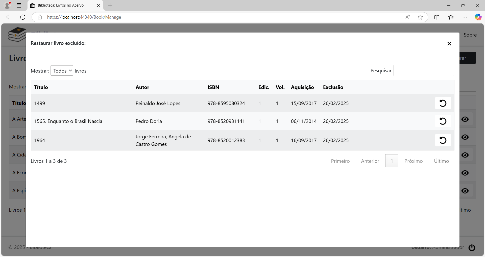

Menu Acervo
Clicando na opção de menu Acervo, será exibida a página Livros no Acervo. No primeiro acesso ao sistema, a página terá o seguinte aspecto:

Como não há nenhum livro cadastrado ainda, a lista aparece vazia. Após o cadastro do primeiro livro e dos livros subsequentes, a página ficará com este aspecto:

Cada linha da tabela, representando um livro no acervo, tem 6 botões, localizados à direita da coluna Aquisição, com as seguintes funções, nesta ordem:
Editar o livro: Alterar o cadastro do livro.
Excluir o livro: Excluir o cadastro do livro.
Descartar o livro: Registrar o descarte do livro.
Doar o livro: Registar a doação do livro.
Emprestar o livro: Registrar o empréstimo do livro.
Detalhes do livro: Conferir os dados do livro na página Detalhes do Livro.
Cadastrar um novo livro no acervo
Para cadastrar um novo livro no acervo, clique no botão Cadastrar. Será exibida a página Cadastrar Livro:

Preencha os campos:
Título: Título do livro.
Subtítulo: Subtítulo do livro.
Autor: Autor(es) do livro.
Editora: Editora do livro.
ISBN: Número do ISBN do livro.
Edição: Número da edição do livro.
Volume: Número do volume do livro.
Publicação: Ano da publicação do livro.
Nº de páginas: Número de páginas do livro.
Aquisição: Data de aquisição do livro.
Sinopse: Sinopse do livro.
Capa: Capa do livro.
Preenchidos os campos, clique no botão Salvar.
Alterar o cadastro de um livro
Localize na lista o livro que terá o cadastro alterado e clique no botão Editar o livro. Será exibida a página Editar Livro, listando todos os campos do mesmo:


Altere o(s) campo(s) que está(ão) incorreto(s) ou selecione uma outra capa e clique no botão Salvar.
Excluir o cadastro de um livro
Localize na lista o livro que terá o cadastro excluído e clique no botão Excluir o livro. Será exibido o diálogo para confirmação:

Clique no botão Confirmar para concluir.
Descartar um livro do acervo
Se um livro foi descartado do acervo, seja por dano, perda, ou qualquer outro motivo, localize-o na lista e clique no botão Descartar o livro. Será exibida a página Descartar o Livro:

Preencha os campos:
Data: Data em que o livro foi descartado.
Motivo: Motivo pelo qual o livro foi descartado.
Preenchidos os campos, clique no
botão Salvar.
Doar um livro para terceiro
Se um livro do acervo foi doado para uma outra pessoa, ou para uma biblioteca, localize-o na lista e clique no botão Doar o livro. Será exibida a página Doar o Livro:

Preencha os campos:
Beneficiário: Pessoa ou biblioteca que recebeu o livro.
Data: Data em que o livro foi doado.
Anotações: Informações adicionais sobre a doação.
Preenchidos os campos, clique no
botão Salvar.
Emprestar um livro para terceiro
Se um livro do acervo foi emprestado para uma pessoa, localize-o na lista e clique no botão Emprestar o livro. Será exibida a página Emprestar o Livro:

Preencha os campos:
Tomador: Pessoa que tomou o empréstimo.
Data: Data em que o livro foi emprestado.
Anotações: Informações adicionais sobre o empréstimo.
Preenchidos
os campos, clique no botão Salvar.
Gerar o relatório Livros no Acervo
Para imprimir o relatório de todos os livros do acervo, clique no botão Imprimir, no cabeçalho da página.

O formato do relatório pode ser PDF ou HTML, dependendo do que foi configurado na página Opções.
Restaurar um cadastro excluído
Para restaurar o cadastro de um livro que foi excluído por engano, clique no botão Restaurar, no cabeçalho da página. Vai abrir o diálogo Restaurar livro excluído:

Localize o cadastro a ser restaurado e clique no botão Restaurar (seta).